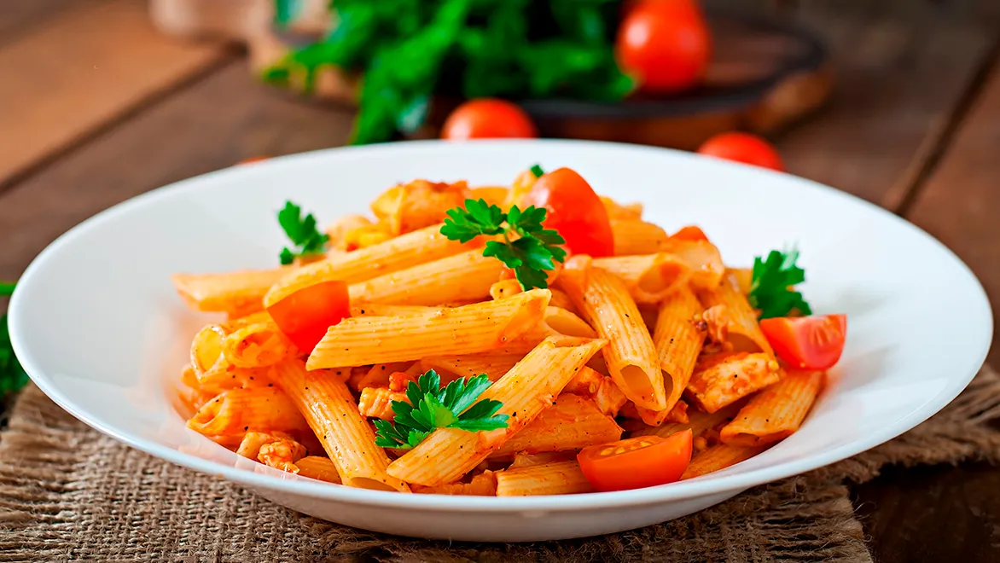

Кулинарные рецепты

Готовим макароны на гарнир и как самостоятельное блюдо: 15 лучших рецептов
Добавил к макаронам кусочек сливочного масла — и уже вкусно. Посыпал сыром — отлично. Но есть и другие варианты! Мы знаем, как правильно сварить макароны на гарнир и чем их можно дополнить, чтобы получилось полноценное блюдо.